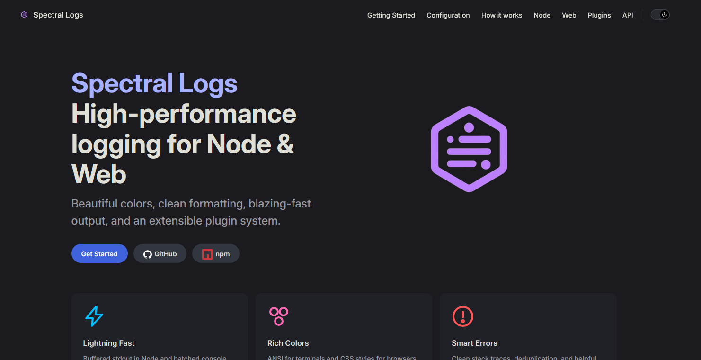

Spectral Logs
Logger moderno y rápido para Node.js/TypeScript y web, pensado para DX y rendimiento. Ultrarrápido, con colores avanzados, soporte completo TypeScript, manejo inteligente de errores, sistema de complementos extensible, cero dependencias y herramientas CLI integradas.